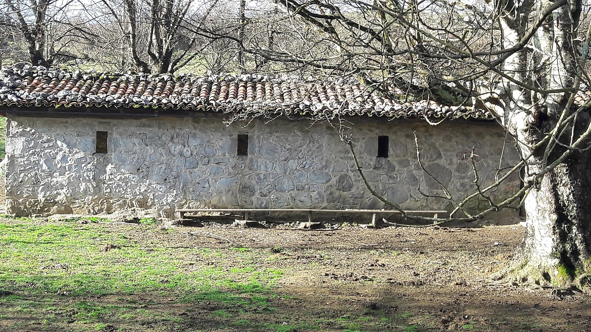

Ibilbidea
Ikastola, Pagoeta, Lukun, Ikastola.
Pagoeta mendia da Zarautz inguruko mendirik garaiena. Aiako lurraldean dagoen arren, zarauztarrek etxekotzat dute. Hainbat erreferentzia dago Zarautzen Pagoetarekin lotuta: Mendi Elkartea, mendi-lasterketa, Pagoeta Eguna (ekainean)… Pagoeta 1998ko irailaren 29an deklaratu zuten parke natural. Parkeak 2.860 hektareako azalera du; haren zatirik handiena Aiako udalerriaren barnean dago, eta gainerakoa Zarautz eta Zestoaren artean banatzen da.
 1. arg.
1. arg.
Irteera Maria Etxetxiki kaletik egingo da, Salbatore Mitxelena ikastolaren aurretik (1. arg.). Ikastolatik abiatu, eta trenbide azpiko tuneletik pasatuko gara. Suhiltzaileen aldera hartu, eta erreka bazterreko bidegorriari barnerantz jarraitu bidegorria amaitu arte. Bidegorria amaitzen denean, autobidearen azpitik pasatu, eta, espaloia utzi gabe, Abendañoko industrialdea eskuinera dugula (2. arg.), Bentas izeneko bidegurutzera iritsiko gara (3. arg.). Errepidea gurutzatu, eta aldapan gora Argoin-Txikirako bidea (lehengo zabortegiko bidea) hartu behar da (4. arg.).
Maria Eizagirre “Maria Etxetxiki” Zarautzen jaio zen 1886. urtean Añurbe baserrian, eta Etxetxiki baserrira ezkondu.
Zarautzen kale horrek bakarrik du emakume baten izena. 11 seme-alaba izan zituen. 21 urterekin hasi zen emagin-lanetan, eta bizitza guztia eman zuen lan horretan. Baina ez hori bakarrik: 11 seme-alaben arduraz gain, besteak beste, injekzioak jartzen zituen, hilzorian zeudenak zaindu, San Pelaioko ermita zaindu eta etxeko baratzean jarduten zuen.
«Iñurritza» eta «Abendats» ezizenez ezaguna, Zarautzen jaio zen 1919an, eta euskal olerkaria izan zen. Apaiz frantziskotarra zela, Frankismo garaian Espainiako Eliza ofizialak jarraitzen zuen ildoarekin ados ez zegoenez eta hizkuntzaren eta hiztunen egoera itota ikusten zuenez, bere burua misioetara erbesteratzea erabaki zuen.
Mitxelenaren idazlanak euskararekiko eta Euskal Herriarekiko samin arduraz beterik daude eta bere olerkigintza bertsogintza tradizionaletik oso hurbil dago.
Errepidez izango dira hurrengo metroak, aldapan gora (5. arg.)
5. arg. 6. arg.Bideari segituz, ezkerretara utzi lehen zabortegia zena (6. arg.). Zabortegia pasatu ostean, eskuinera hartuko dugu, zelaian barrena dagoen bidexka batetik, marra gorridun ziri baten ondoan (7. eta 8. arg.).
7. arg. 8. arg. 9. arg..jpg) 10. arg.
10. arg.
Bidexkan gora, bi langa pasatu, eta Gorritxu baserrira iritsiko gara. Iturria dago han, ura edan nahi izanez gero (9. arg.).
Zelaigunean barrena dagoen bidexkatik gorantz segituko dugu (10. arg.). Pinudi batera iristen da bidexka (11. arg.), Eta handik pista batera eramango gaitu (12. arg.).
.jpg) 11. arg.
11. arg.
.jpg) 12. arg.
12. arg.
Pistari jarraituko diogu gorantz.
.jpg) 13. arg.
13. arg.
.jpg) 14. arg.
14. arg.
Pistan barrena jarraitu bidegurutze batera iritsi arte (13. arg.). Han beste langa bat izango dugu aurrez aurre, eta pistan segitzeko aukera ere bada eskuinera eginda. Langa pasatu, eta basoan dagoen bidexka hartuko dugu (14. arg.).
Pagoeta animalia-espezie ugariren bizilekua da. Ingurumen anitza izateak parkean aske bizi diren animalia-espezie asko izatea ahalbidetu du, horietako batzuk Euskal Herrian galbidean dauden espezieak.
Ibilbidean zehar ikusi ahal izango dituzu: betizuak eta pottokak, muxar grisa, katagorria, belatz handia, erlastar europarra, suge europarra, oreinak, basurdeak, erbiak, baita urtero Afrikatik barrena udaberrian habia egitera etortzen diren sai zuriak ere. Sarritan, haien hanka-arrastoak edo gorotzak besterik ez duzu ikusiko. Ezagutzen ikasi beharko da.
.jpg) 15. arg.
16. arg.
15. arg.
16. arg.
Beste langa batera iritsiko gara. Zaldiak egon ohi dira larrean, baina lasai asko pasatu daiteke zelai hartatik (15. arg.). Langa pasatu (ez ahaztu ixtea), eta Pagoetarako bidea hartuko dugu, zuri-horiz marraztua dagoen ildoan (16. arg.).
17. arg.Bideari jarraitu ordez, zelaian gora dagoen arrastotik jarraituko dugu (17. arg.) Bide horri jarraituz iritsiko gara Mazinger izenez ezagutzen den argindar-zutabera (18. arg.). Marra zuri-horiei jarraituz, beste langa bat pasatu eta gorantz egingo dugu (19. arg.). Hortik aurrera, ezkerreko hesia erreferentziatzat hartuta segituko dugu gorantz doan bidexkatik. Eskuinetik ere joan daiteke, baina ezkerreko hesiaren erreferentzia segituta ez da galbiderik.
18. arg. 19. arg. 20. arg.Harri batzuk ikustean, eskuinetik zeharkatu behar dira (20. arg.).
21. arg.Aldaparik gogorrena hortxe izango da (21. arg.). Amaieran Pagoetako bordara iritsiko gara (22. eta 23. arg.), eta handik bistan da gurutzea (24. arg.).
22. arg. 23. arg. 24. arg.Gurutzera iritsiz gero, lainorik ez bada, ikuspegi paregabea gozatu ahal izango dugu (25. eta 26. arg.).
25. arg. 26. arg.Itzulera goranzko bide beretik egin daiteke, baina proposatzen dugun bidea zirkularra da. Beraz, gurutzetik Zarautza begira jarri eta eskuinera dagoen langa igaroko dugu (27. eta 28. arg.). Basoan barrena sartuko gara beherantz.
Pagoetako Parkeko landaredia atlantikoa da, klima epel eta euritsura egokitutakoa. Pagoetako berezko landaredia, gehienbat, Quercus robur espezieko hariztiek osatuko lukete. Erreka bazterretan eta etengabe heze dauden laiotzetan haltzadi kantauriarra izango litzateke nagusi eta, amaitzeko, 500 edo 600 metrotik gora, pagadia (hortik mendiaren izena).
Baso horietako askoren ordez gaur egun belardiak, baratzeak, pinudiak eta antzekoak ikusiko ditugu. Altzolarasko arroilan, berriz, kareharrizko harkaiztegiak eta zuhaitz hostoerorkorren baso misto ikusgarriak nahasten dira: ezkiak, basagurbeak, hostazuriak, haginak, lizarrak etab.
(Ikusi www.aiapagoeta.com)
 27. arg.
28. arg.
29. arg.
27. arg.
28. arg.
29. arg.
Beherantz goazela, pista zabal batean sartuko gara. Pistan aurrera eginez gero Aiara iritsiko gara, baina guk Zarautza itzuli nahi dugunez, pistan ezkerretara doan bide bat ikusteko adi egon behar dugu. Bidexka hori hartzeko kurba itxi bat hartu beharko dugu Zarautz aldera jotzeko (30. arg.). Behin bidegurutze hori hartuta, bidexkari segi baino ez da egin behar (31. arg.).
30. arg. 31. arg.Bidexkari segituta marra zuri-horiei jarraitu (32. arg.).
32. arg.Mazingerrera iritsiko gara basotik irteten garenean. Argindar--zutabe handi hori erreferentziatzat hartuta, ezkerrerantz, beherantz segituko dugu pistan (33. arg.).
 33. arg.
33. arg.
Pistan behera eginda, adi egon beharko dugu beste bidegurutze batean, oraingoan marra zuri-berdeei segituz, berriz ere basoan sartuko garelako (34. eta 35. arg.).
34. arg. 35. arg.Amezketa lardi baserrira iritsiko gara (36. arg.).
36. arg. 37. arg.Baserri hori eskuinera utzi, eta ezkerretik segituko dugu bidexkan behera, basoan (37. arg.).
38. arg.Marra zuri-berdeak hartuko ditugu erreferentziatzat orain ere (38. arg.).
39. arg. 40. arg.Sarrola baserrira iristean, hura eskuinaldera utziko dugu Lukunerako bidetik (39. eta 40. arg.). Marra zuri-berdeei jarraitu.
41. arg. 42. arg.Basoan aurrera eginez, pistari segituta, basoan zabaltzen den pistan jarraitu (41. eta 42. arg.), Lukuneko aparkalekura iritsi arte (43. eta 44. arg.).
43. arg. 44. arg. 45. arg.
46. arg.
45. arg.
46. arg.
Lukuneko aparkalekutik Zarautz alderako bidean segituko dugu, eskuinera errepide nagusia utzita. Landarbide baserrira iristean, ezkerrera doan pista hartuko dugu. (45. eta 46. arg.)
47. arg. 48. arg. 49. arg.Marra zuri-gorriei segituz, dena beheranzko bidea izango dugu hemendik aurrera. (47., 48. eta 49. arg.)
50. arg. 51. arg. 52. arg.Errepidean behera goazela, Zarautz gertu dugula, Arizia sagardotegia pasatu eta gero, eskuinera doan pista hartuko dugu, Frantzeskua baserria baino lehen (50. arg.). Pista horri segituta laburtuko dugu ikastolarainoko bidea (51. arg.). Industrialde txiki bat dagoen tokian, bidegurutzean beherantz hartuko dugu (52. arg.). Autobide azpiko tunela igarota Itxasmendi auzora iritsiko gara. Itxasmendi auzotik, errekaren beste aldera pasatuta, suhiltzaileen eraikin aldera egingo dugu.
 53. arg.
53. arg.
 54. arg.
54. arg.
Biribilgunea eskuinetara utzita, zebra-bideak eta trenbideko tunela pasatuta, berriz ere ikastolara iritsiko gara (53. eta 54. arg.).